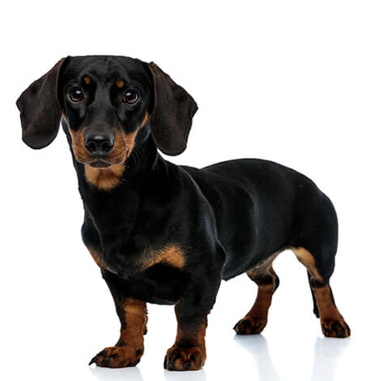
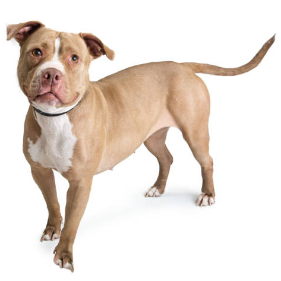
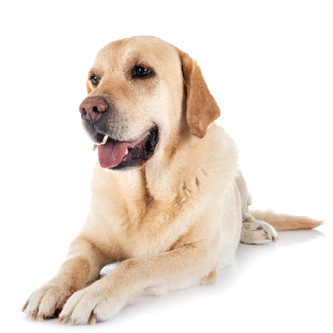

Best Dog Breeds
|  | |
 | |
 |
| • The Dachsund is known for its long body. | • The Jack Russel is known to be very active. | • The Pitbull is known for its well-defined body. | • The Shih Tzu is known to be very cute and adorable. | • The Labrador is known to be very friendly. |
| • The dachsund only needs to be groomed a few times a month. | • The Jack Russel also only needs to be groomed a few times a month. | • The Pitbull only needs to be groomed once a month. | • The Shih Tzu may need to be groomed per week. | • The Labrador only needs to be groomed a few times a month. |
| • Dachsunds aren't build for long periods of activity but will still be very active. | • Jack Russells are very active in which they like to run around and jump freely. | • Pitbulls are not as active as Jack Russells but they are also not lazy. | • Shih Tzus are about the same energy levels as Dachsund. | • Labradors are also very active and like to play with their owners. |